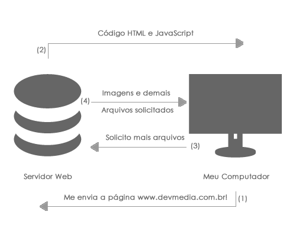

Introdução ao Javascript
Este artigo visa fazer uma introdução de forma simples e não extremamente formal a esta linguagem de scripting que vêm se firmando como uma das bases de toda aplicação web. Você já deve ter ouvido falar neste nome, mas não faz ideia de o que é ou para que sirva, correto? Então este artigo é feito para que você entenda de forma simples como funciona e como fazer seu primeiro script nesta linguagem.
Relacionado: JavaScript Replace
Em primeiro lugar, o termo JavaScript nada tem haver com a linguagem de programação Java, esta é uma grande confusão feita pela comunidade de desenvolvimento web, principalmente por quem nunca trabalhou com a tecnologia, mas vamos pular contextos históricos e discursos sobre como surgiu o nome, vamos ao que importa.
A linguagem JavaScript é uma linguagem do tipo Client Side, ou seja, ela é executada no computador do usuário. Esta é uma das definições mais importantes desta linguagem, pois isto explica muita coisa!
Quando acessamos uma página Web, temos uma sequência de eventos, ou melhor, um fluxo de comunicação entre o nosso computador e o servidor onde está a página, veja a figura 1.
Figura 1. Exemplo de comunicação entre computador do usuário e servidor Web
Obviamente o fluxo representado na figura 1 é apenas didático, mas nos dá uma ideia de o que acontece quando digitamos o endereço www.devmedia.com.br, por exemplo. Vamos explicar:
Você digita o endereço www.devmedia.com.br em seu browser, a partir dai, será comunicado o servidor onde está essa página, solicitando que sejam enviados os arquivos pertinentes; O servidor vai interpretar este pedido e vai retornar a página solicitada em formato de texto, contendo o código HTML e JavaScript que esteja incorporado nesta página; O seu computador recebe este código, interpreta o mesmo, e se necessário, solicita imagens, mais arquivos e mídias que estejam sendo referenciados dentro o HTML recebido. Mas qual o motivo de saber isso? Muito simples, o fato de o seu computador receber algum código e interpretar já explica o que é uma linguagem do tipo Client Side, ou em português, lado cliente.Quando trabalhamos com aplicações Web, temos dois tipos de linguagem de programação, que são: Client Side e Server Side.
O JavaScript é uma linguagem do tipo Client pois quem interpreta e gera os resultados é o computador do usuário e, deste jeito, começam a surgir os problemas. Você já parou para imaginar quantos tipos diferentes de sistemas operacionais, browsers, conexões e hardwares que existem? Sim, isso traz sérios problemas, pois nem todos os browsers interpretam JavaScript da mesma forma, ouso dizer que nem todos os browsers interpretam JavaScript.
O que JavaScript faz afinal?
JavaScript consegue interagir com, praticamente, todos os elementos de uma página HTML, trabalhar com variáveis, gerar resultados, alterar a aparência de elementos e o melhor, sem a necessidade de ficar recarregando a página. Existem aplicativos inteiros feitos somente usando JavaScript, e ouso dizer que estes aplicativos passarão a ser cada vez mais comuns com o passar do tempo e a evolução desta linguagem.
Não ficou muito claro, não é mesmo? Este conceito vai melhorar conforme formos exercitando, praticando e, principalmente, programando.